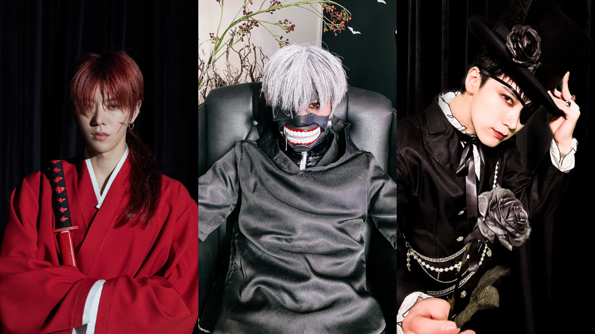
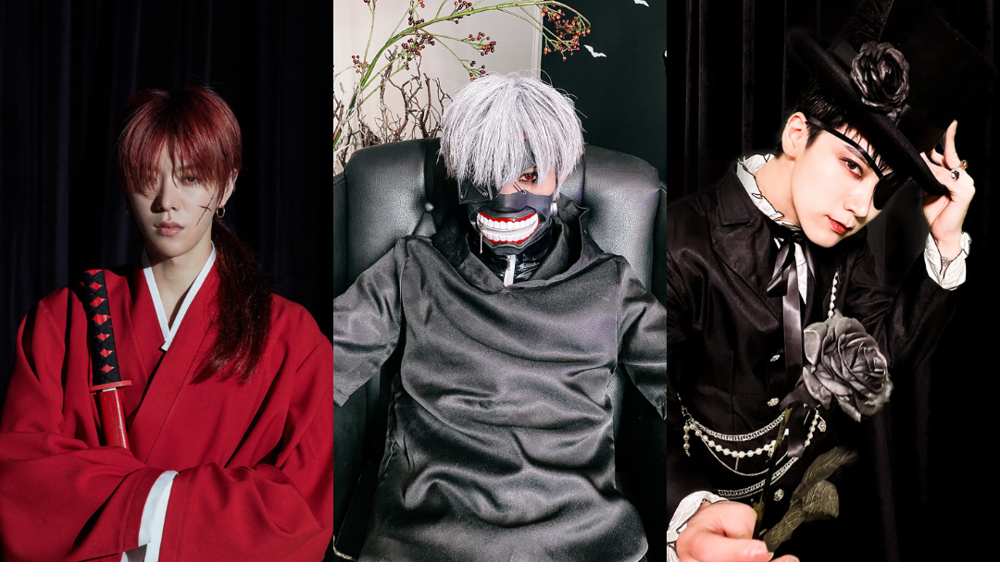

COSPLAY
Main kostum atau lakon kostum, adalah aktivitas dan pertunjukan seni di mana para peserta yang disebut cosplayer mengenakan kostum dan aksesori busana untuk mewakili tokoh tertentu.
Main kostum atau lakon kostum, adalah aktivitas dan pertunjukan seni di mana para peserta yang disebut cosplayer mengenakan kostum dan aksesori busana untuk mewakili tokoh tertentu.
